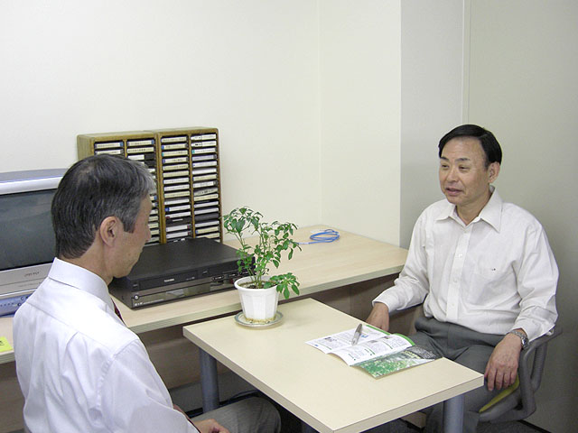
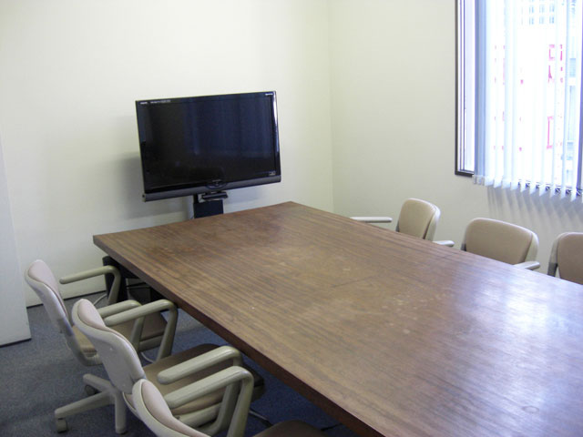
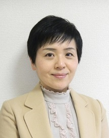
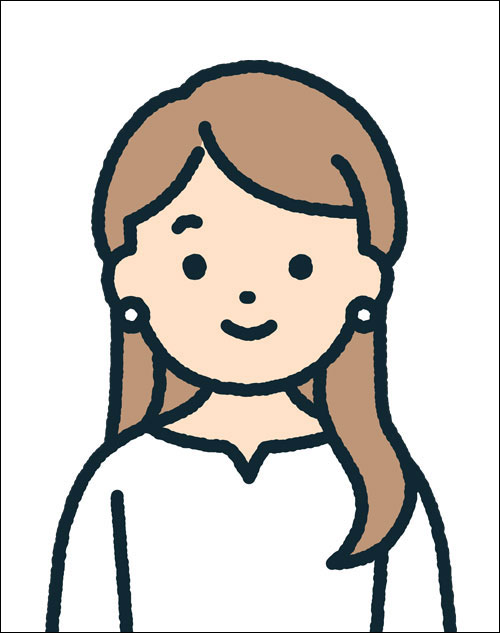

メンタルヘルス相談室では、お電話でのご相談と共に、事前にご連絡いただければ、面接相談もお受けしております。お気軽にお電話ください。
尚、ご相談は、森田療法相談員と図書室相談員（臨床心理士）が対応しています。
通常、月曜日から金曜日までお電話ないしは、ご来室にてご相談を受け付けていますので、是非お気軽にお立ち寄り下さい。
またホームページには会員制掲示板を活用した無料相談室（体験フォーラム）を設置しています。こちらは、神経症（不安症）及びその克服者のみを対象にした会員制の掲示板です。会員同士の相互扶助形式で悩みの相談や克服ができる掲示板です。
ご注意
当財団は医療機関ではありません。治療行為や薬物のご相談はご遠慮願います。
電話・面接相談
- 心の悩みや不安症の症状、森田療法に関するご相談
- 電話・面接相談は無料です（通信料はご負担ください）
- 電話相談の予約は不要です。面談は電話にて予約して下さい
- 平日、月曜から金曜日の9:30〜12:00、13:00〜16:45です
- 相談は、森田療法相談員、図書室相談員（臨床心理士）が受付ます

個別面談室

会議室（多人数ミーティング他）
無料オンラインカウンセリング
無料カウンセリングは、予約制での臨床心理士によるカウンセリングを行っています。これまでカウンセリングを受けたことが無い方やどのような治療機関等にゆけばよいか迷われている初心者などを主たる対象者にしています。お一人様1回のみとなります。（代理者でも同様）
ご注意
当財団は医療機関ではありません。治療行為や薬物のご相談はご遠慮願います。
- 全般的な心の問題に関するご相談（森田療法を含む）
- カウンセリング料は無料です（お一人様1回のみ／代理者でも同様）
- 東京・大阪・北海道の3人のカウンセラーから選択できます
- 下記の「オンライン面接」 のボタンをクリックして下さい
- お一人45分間です
- 相談員は、臨床心理士、公認心理師などの有資格者です
- カウンセラー：
- 田邉千栄里（臨床心理士／公認心理師）
- 略歴を見る

1983年立教大学文学部仏文科卒業。
会社員、主婦、子育て、海外生活を経験後、2012年目白大学大学院臨床心理学研究科修士課程修了。
2013年から東京都こころの電話相談員を3年間務める。
2014年から現在まで上野の森クリニックに勤務。
2015年、池袋に「あずま通り心理相談室」を開設。
2022年には「森田療法オンラインカウンセリング」に名称変更し、オンライン心理相談を行う。
その他ハローワーク特別支援相談員など。
資格：臨床心理士、公認心理師
- 梅崎さおり（公認心理師／歯科衛生士 他）
- 略歴を見る

1999年大阪歯科衛生士専門学校卒業。
2011年より、歯科医院にて歯科心身症のかたを中心に心理相談に従事。心理支援を必要とする口臭治療の臨床と研究に従事している。
2019年11月～2025年3月: 財団外部委嘱カウンセリングにて電話相談及びメール、掲示板相談等に従事。
2025年4月: 図書室・相談員に就任。
資格：公認心理師、歯科衛生士、日本口臭学会口臭認定公認心理師、日本口臭学会認定歯科衛生士
- 小林美穂子（臨床心理士／公認心理師）
- 略歴を見る
1988年：早稲田大学政経学部卒業
外資系金融会社に勤務した後に、3児の子育てに専念
2004年より、EAPおよびカウンセリングを主たる業務とする株式会社ハートフルマインド（旧・有限会社データム）の代表取締役を務める
2008年：札幌学院大学大学院臨床心理学研究科修士課程修了
2009年5月～2026年3月：大通公園メンタルクリニック
2010年10月～現在：北海商科大学学生相談室カウンセラー
東日本大震災(2011)、熊本大地震(2016)、北海道胆振東部大地震(2018)、能登半島地震(2024)において災害派遣緊急スクールカウンセラーとして被災地支援活動に携わる
資格：臨床心理士・公認心理師・日本森田療法学会認定心理療法士
好きなこと：自然、食べること、踊ること
- 田邉千栄里（臨床心理士／公認心理師）
インターネット相談室（体験フォーラム）
- 入会、参加は無料です
- 会員制掲示板（無料） のボタンをクリックして下さい
- 神経症（不安障害）及び神経症克服者のみ参加可能